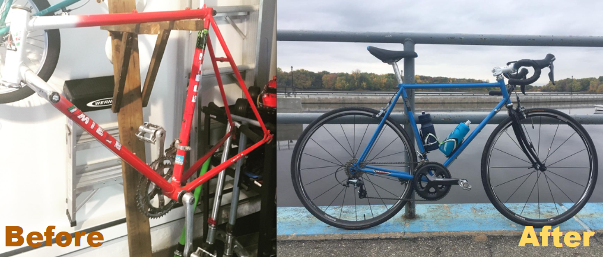

With terrible luck at my first attempts fishing, I decided to strategically approach the situation. I collected and documented data related to fishing, including:
Driven by a deep passion for cars, I aimed to create a library showcasing the interesting vehicles I've spotted over the years. With a large enough library, I wish one day to incorporate some graphical design components into my photography.
Here is a link to some of my work @cf8accord.
The purpose of this project was to write a research report touching upon two disciplines of social science. I decided to take an anthropological and historical approach to Japan's prehistoric civilizations and their evolution from a nomadic lifestyle to a sedentary one.
The goal of this paper was to shine light on the female warriors of Japan's Samurai era, the Onna-musha, also known as the female samurai of Japan, their purpose, societal status and more. The project allowed me to learn a lot about a culture that was very foreign to me.
More than a year ago, my grandpa gave me his 1999 Honda Accord sedan. Although the car had low mileage for the year, it was in rough shape. The engine is getting by and the body is rotted out. Receiving this car has allowed me to better understand aspects of automotive repair. In just a year I learnt how to:
Assetto Corsa is a racing simulator game allowing you to connect a steering wheel, pedals and a shifter to your computer, allowing for a realistic feel of what racing is like. In order to race with friends remotely, a server is required. Through setting up a server, I learnt:
Wanting to learn C#, I decided I would challenge myself with a small ice cream vending machine project. For this project, I had to learn how to use VisualStudio, C#, console, and programming with a GUI. The design was pretty simple yet still provided me lots of knowledge on GUI interfaces and integrating them with OOP.
My first ever programming project was a discord.py bot. Without any prior knowledge to coding, I experienced a huge learning curb. The bot performed simple tasks such as greeting people, sending images, performing simple math and even joining voice calls and playing requested songs.
The personal project is a year-long project all students enrolled in IB must complete. Given free range on the project, Quite a lot of research was done: component compatibility, structural integrity, assembly documentation, etc. 